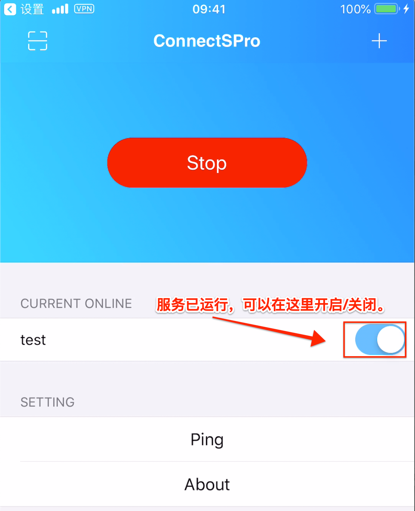
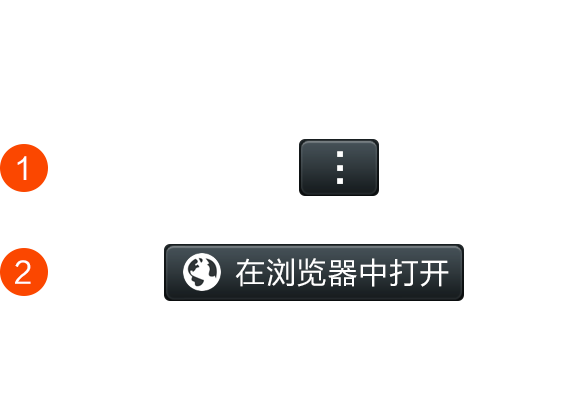
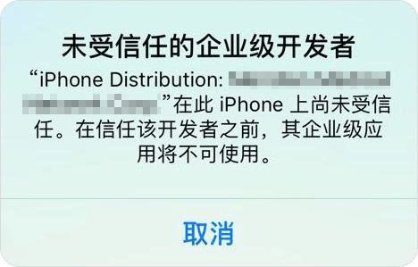
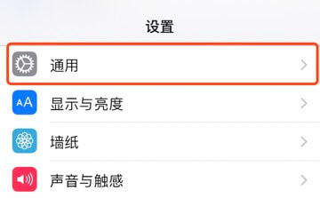

iOS 安装和使用教程
1. 申明
本教程适用于所有 iOS 设备。建议您先浏览本文全文后再进行操作。 本教程仅供学术研究和交流！
2. 下载客户端
2.1 【二选一】 使用PP助手安装客户端。需要您现在电脑上下载 PP助手客户端，然后通过 USB 将手机与电脑相连。这样 PP 助手自动在您的手机中安装PP助手移动端。
接下来，在 PP 助手电脑端搜索 “ssrconnect”，点击下载即可。
如果您不熟悉PP助手，请尽量通过美区帐号在正式商店中下载客户端。PP助手下载的客户端并不能保证能够正常使用。
2.2 【二选一】 登录美区 App Store 下载免费客户端。请先在设置中退出您的Apple ID，登录美区帐号下载客户端。如果您没有美区帐号，可以从闲鱼或者淘宝搜索 “美区苹果ID” ，选择任意商家购买一个帐号。
登录后，请点击图示位置，启用 App Store。
3. 在 App Store 中搜索 connectspro，或者直接点击下方链接跳转到 App Store 下载。
App Store 下载
下载完成后，在桌面可以看到这个 App，现在您可以推出美区账号，登录回您自己的账号了。
4. 打开 App，点击右上角的 “+”，添加配置。注意：通过二维码和URL方式添加配置还在优化当中，iOS 端暂时不支持。另外，如果服务器更新，客服都会将最新的配置发送给您，通常您只需要更新服务器IP，其它信息是不变的。
请将我们给您的数据填入相应的位置。注意：经测试，如果选择 System 模式，部分91视频是无法加速的，所以一定要选择 Global ！
5. 添加完成后，启用配置（小飞机变成红色即表示已启用）
6. 授予App 相应的系统权限
首次添加，系统会提示授权。按图示操作即可。一定要同意授权哦！
7. 运行服务
自动运行/开启服务。

8. 便捷操作
返回到桌面主页，右滑。点击编辑。
在列表中找到 App，并点击左边的“+”，再点击右上角的“完成”。
从此以后，不用再打开 App 即可控制服务的开关。添加/修改配置还是要打开 App 哦。 服务运行时，可以在手机的左上角看到 “VPN” 的标志。 注意：使用过程中，请遵守相关法律法规哦！

×
"未受信任的企业级开发者"的解决办法
因苹果公司的政策原因，在iOS系统中首次安装企业版应用时会出现"未受信任的企业级开发者"提示

解决办法如下（以iOS11系统为例）：
1、在手机中打开设置功能，选择"通用"

2、在通用中，选择"描述文件与设备管理"功能
3、在描述文件与设备管理中的企业级应用分类中，选择要安装的企业应用的文件名称（与打开时的提示一致），点击进入
4、进入企业签名页面后，确认企业签名中的公司名称与应用名称后，点击信任"企业签名公司名称"
5、回到桌面，重新打开应用即可使用
一键跳转，立即信任